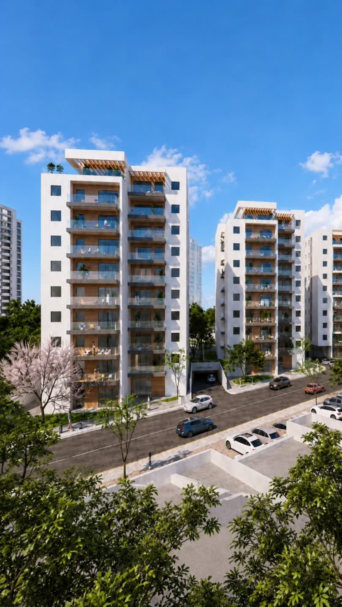

מרפסת רחבת ידיים שמרגישה כמו גינה פרטית — לאירוח, לשקט ולחיים תחת שמיים פתוחים.
סלון, פינת אוכל ומרפסת מתחברים לחלל אחד פתוח ומואר — הכול נפתח אל הנוף.
חלל המגורים כולו פונה החוצה — האור, הנוף והבריכה מלווים כל רגע בבית.